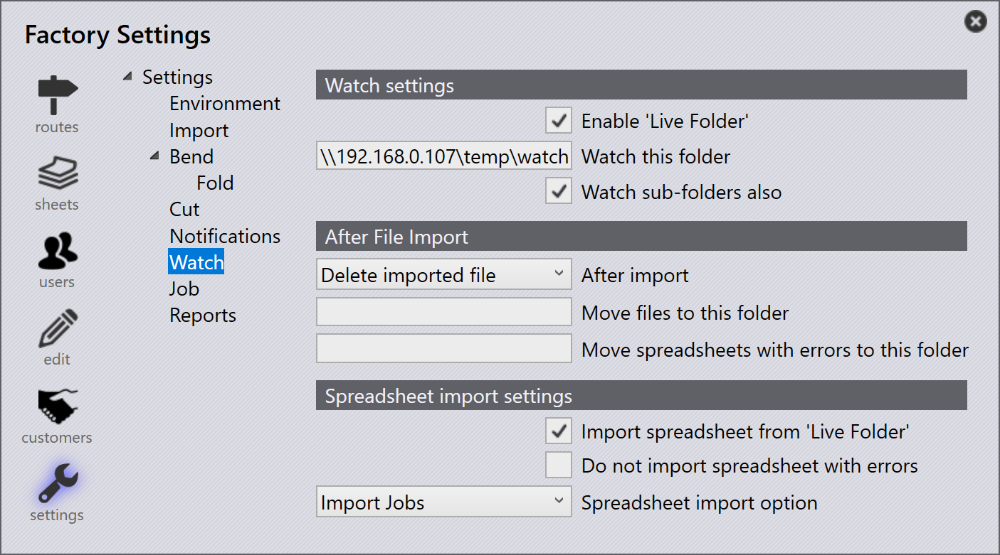

Jobs importeren
Importeren uit csv of xlsx
U kunt ook jobs importeren in gangbare tekstformaten
-
Klik op File → Open → Jobs importeren, het dialoogvenster Map openen verschijnt. Selecteer
C:\Program Files\Metamation\Praxis\Samples\Jobs\C0\C0.csv.
-
Als alle Onderdelen bestaan in de csv-locatie of in opzoekmapdirectories, verschijnt het nieuwe job venster met een lijst van alle onderdelen die overeenkomen met de csv-velden.
-
Ontbrekende onderdelen worden genegeerd en verschijnen niet in het nieuwe job venster.
-
Aanvankelijk is de Onderdeelstatus Nascent.

-
Klik op OK, nu worden onderdelen geïmporteerd in de Onderdelenbibliotheek. CAD-validatie, gereedschappen voor buig- en snijgereedschapsinstanties worden uitgevoerd, wat kan worden gemonitord in het Pmonitor scherm.

Een voorgesneden stuk voor de ontbrekende CAD-bestanden aanmaken
Bij het importeren van jobs met behulp van een spreadsheet (.csv of .xlsx), kan het voorkomen dat u rijen hebt die verwijzen naar CAD-bestanden die niet beschikbaar zijn in het systeem.
-
Om dit af te handelen, gaat u naar fabriek → Instellingen → Job, schakel onder Spreadsheet importeren de optie Een voorgesneden stuk voor de ontbrekende CAD-bestanden aanmaken in

Wanneer deze optie is geselecteerd:
-
Als een CAD-bestand ontbreekt voor een rij tijdens de job-import, zal het systeem automatisch een leeg onderdeel aanmaken ter vervanging van het ontbrekende CAD-bestand.
-
In het nieuwe job venster worden deze ontbrekende onderdelen visueel gemarkeerd in geel om aan te geven dat het bijbehorende CAD-bestand ontbreekt.

-
Het ontbrekende onderdeel heeft nog steeds zijn toegewezen velden (zoals onderdeelnaam, materiaal, dikte, hoeveelheid, enz.) uit de CSV. De onderdeelstatus wordt echter weergegeven als Nascent, wat betekent dat het slechts een lege tijdelijke aanduiding is zonder daadwerkelijke geometrie.

Dit zorgt ervoor dat de job-import kan doorgaan zonder fouten vanwege ontbrekende CAD-bestanden — u kunt later het lege onderdeel bijwerken of vervangen door het juiste CAD-bestand wanneer het beschikbaar komt.
Het dialoogvenster Nieuwe job niet weergeven als de spreadsheet geen fouten bevat
fabriek → Instellingen → Job → Spreadsheet importeren→ Het dialoogvenster Nieuwe job niet weergeven als de spreadsheet geen fouten bevat
-
Wanneer dit selectievakje is aangevinkt, maakt het systeem automatisch de nieuwe job aan zonder het dialoogvenster Nieuwe Job te tonen als de spreadsheet geen fouten bevat (geen ontbrekende onderdelen, ontbrekende datums of ongeldige gegevens).
-
Wanneer dit selectievakje is uitgevinkt, verschijnt het dialoogvenster Nieuwe Job altijd ter beoordeling en bevestiging, zelfs als de spreadsheet geen fouten bevat.
Prefer raw-material column over material + thickness
fabriek → Instellingen → Job→Prefer Raw-Material column over Material + Thickness
-
Wanneer dit selectievakje is aangevinkt, verwacht het systeem dat de spreadsheet de kolom Raw-Material gebruikt (bijvoorbeeld Steel-20). Dit betekent dat het materiaaltype en de dikte moeten worden gecombineerd in één waarde in één kolom.
-
Wanneer dit selectievakje is uitgevinkt, verwacht het systeem dat de spreadsheet afzonderlijke kolommen heeft voor Material en Thickness (bijvoorbeeld Steel en 2.00). Het systeem combineert ze intern tijdens import.

Watchmap gebruiken met CSV/XLSX
-
Schakel in fabriek → Instellingen→ Bekijken de optie 'Live map' inschakelen in en Ook submappen bekijken.
-
Stel het watchmappad in (UNC of toegewezen station).
-
Schakel in Spreadsheet importeren de optie Spreadsheet importeren uit 'Live map' in.

-
Selecteer Jobs importeren bij Spreadsheet Import opties.
-
Kopieer
C:\Program Files\Metamation\Praxis\Samples\Jobs\C0\C0.csven plak dit in de Watchmap. -
Het systeem controleert de CSV en probeert de job automatisch aan te maken.
-
Als het CAD-bestand ontbreekt, wordt er geen job aangemaakt omdat de vereiste CAD-gegevens niet worden gevonden.
CAD opzoekdirectory en recursief CAD zoeken - niet geconfigureerd
-
In fabriek → Instellingen → Job → Spreadsheet importeren, als geen CAD lookup directories is ingesteld en Herhaald CAD-zoeken gebruiken niet wordt gebruikt, zoekt het systeem niet automatisch naar CAD-bestanden.
-
Als het selectievakje Een voorgesneden stuk voor de ontbrekende CAD-bestanden aanmaken is geselecteerd, wordt de job nog steeds aangemaakt, zelfs wanneer CAD-bestanden ontbreken.
-
In dit geval worden alle onderdelen in de job aangemaakt als nascent (lege) onderdelen — wat betekent dat ze geen geometrie hebben omdat de CAD-bestanden niet konden worden gevonden.

CAD opzoekdirectory en recursief CAD zoeken - geconfigureerd
Wanneer CAD-opzoekdirectory’s is ingesteld op (C:\Program Files\Metamation\Praxis\Samples) en Herhaald CAD-zoeken gebruiken is ingeschakeld onder fabriek → Instellingen → Job → Spreadsheet importeren:
-
Het systeem zoekt automatisch in de opgegeven map en alle submappen naar de vereiste CAD-bestanden die in de spreadsheet worden vermeld.
-
Een voorgesneden stuk voor de ontbrekende CAD-bestanden aanmaken is ook ingeschakeld, dus als een CAD-bestand nog steeds niet wordt gevonden, maakt het systeem een leeg onderdeel aan als tijdelijke aanduiding.